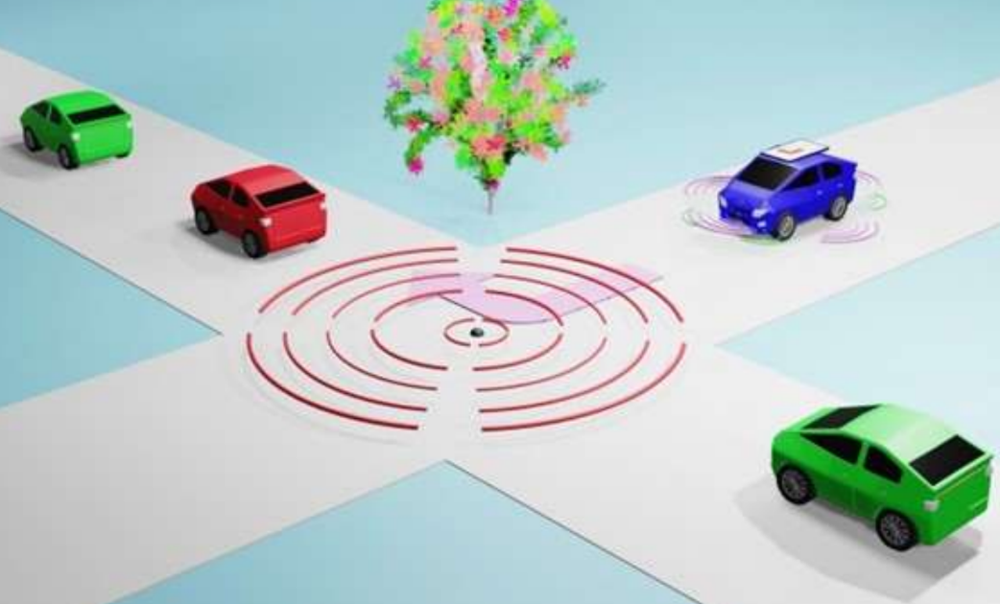

交通社会が抱える課題
身近な道路では、渋滞による移動時間やエネルギー消費の増加、交差点での事故などが課題になっています。

渋滞は、移動時間とエネルギーを増やす
通勤・通学の時間帯などに渋滞が起きると、目的地までの移動時間が長くなります。車が停止と発進を繰り返すことも、エネルギー消費が増える一因です。
車載センサだけでは見えにくい状況も
見通しの悪い交差点や交通量の多い道路では、車同士が接近して衝突する危険があります。車に搭載されたセンサだけでは、建物の陰にいる車や離れた場所の車の動きを把握しにくい場合があります。
AI交通システムの仕組み
上空カメラで取得した車両の位置情報を交通シミュレータ「SUMO」に反映し、その時点の交通状況に応じて経路を計算します。
上空から道路全体を捉える
人工衛星に見立てたカメラで道路を撮影し、映像から各車両の位置情報をリアルタイムに取得します。離れた場所にいる車も含めて、道路全体の状況を把握することを目指します。
SUMOで経路を動的に計算
取得した位置情報を交通シミュレータ「SUMO」に反映し、現在の交通状況に応じた経路を動的に計算します。渋滞や衝突を避けながら、複数台の車を目的地まで走行させるシステムの製作に取り組んでいます。
渋滞や衝突を回避しながら目的地を目指す、未来の交通システムをぜひ展示でご覧ください。